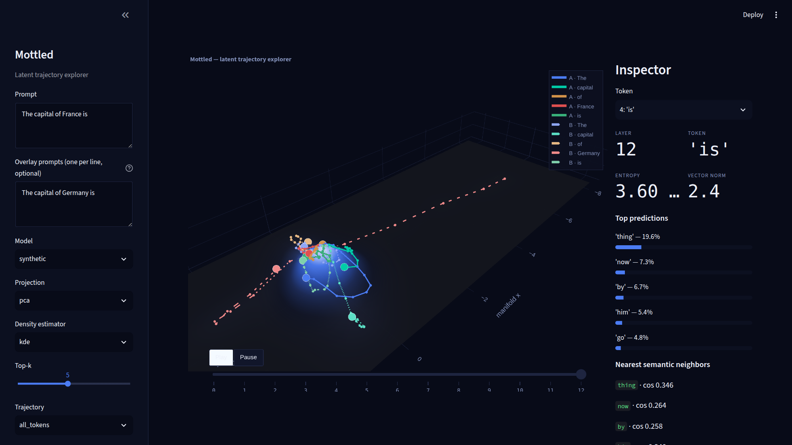
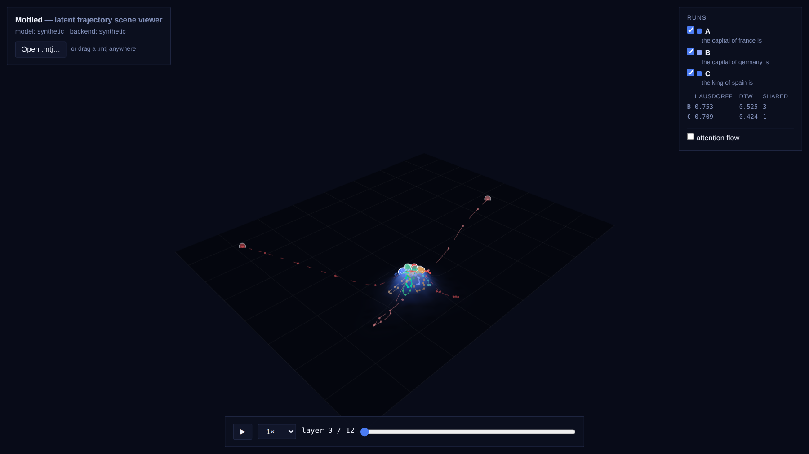

Mottled instruments latent dynamics — how the residual stream moves, turns, and settles as a prompt flows through the layers of a transformer. It is not a neuron inspector or an attribution dashboard: hidden-state evolution is drawn as animated trajectories over a semantic density terrain, with a logit-lens readout at every state.


Forward hooks record the residual stream after every block, with logit-lens logits, entropy, and top-k predictions attached to each state.
Hidden states are projected onto a semantic manifold and animated over a density terrain, with a layer scrubber and per-state semantic neighbors.
A/B and multi-prompt runs share one joint projection and are measured with Hausdorff distance, dynamic time warping, and shared-prefix divergence.
Perturb-and-replay rewrites the residual stream at a chosen layer, and a divergence readout reports where the counterfactual branch separates.
Pretrained sparse autoencoders are applied to every captured state, alongside an exact per-block attention-versus-MLP residual decomposition.
Trajectories and scenes freeze into the versioned .mtj interchange format, rendered by a dependency-free WebGL viewer with no build step.
StateTrajectory is the center of the project — the interchange format everything else plugs into. Neither side knows about the other: a new substrate only needs to emit a trajectory, and the entire stack works unchanged.
pip install -r requirements.txt
streamlit run ui.pyThe default synthetic backend needs no model download. Select a HuggingFace model for real captures.
python -m http.server
# → open http://localhost:8000/viewer/Drag a .mtj file in, or pass ?file=samples/scene-abc.mtj. The sample scene runs here.